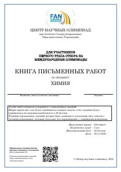

K2Xalqaro kimyo olimpiadalari uchun saralash bosqichi masalalari to'plami.
Ushbu kitob xalqaro kimyo olimpiadalariga saralash bosqichi uchun mo'ljallangan murakkab nazariy va amaliy masalalar to'plamidir. Unda kimyoviy kinetika, termodinamika, kislota-asos muvozanati va organik sintezga oid beshta chuqurlashtirilgan topshiriq keltirilgan.